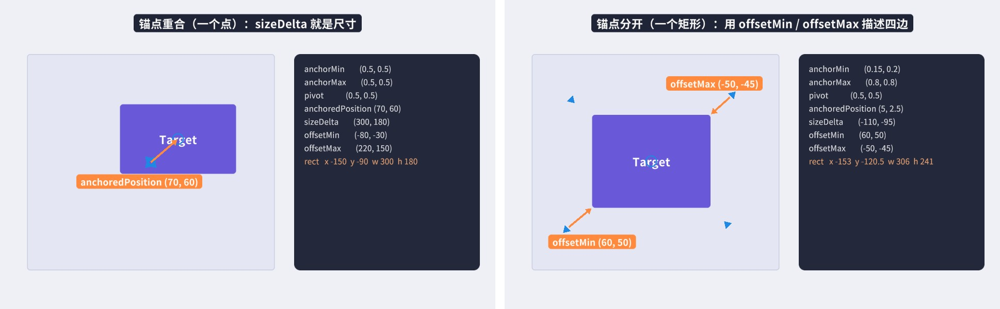
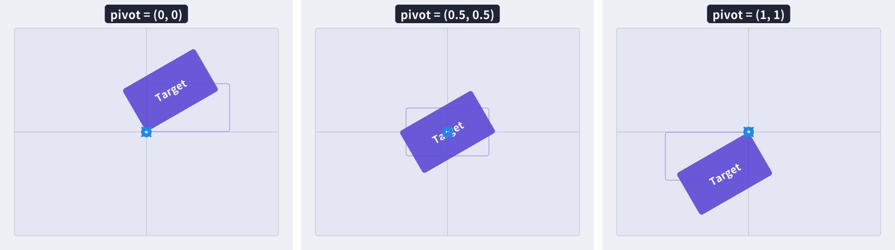
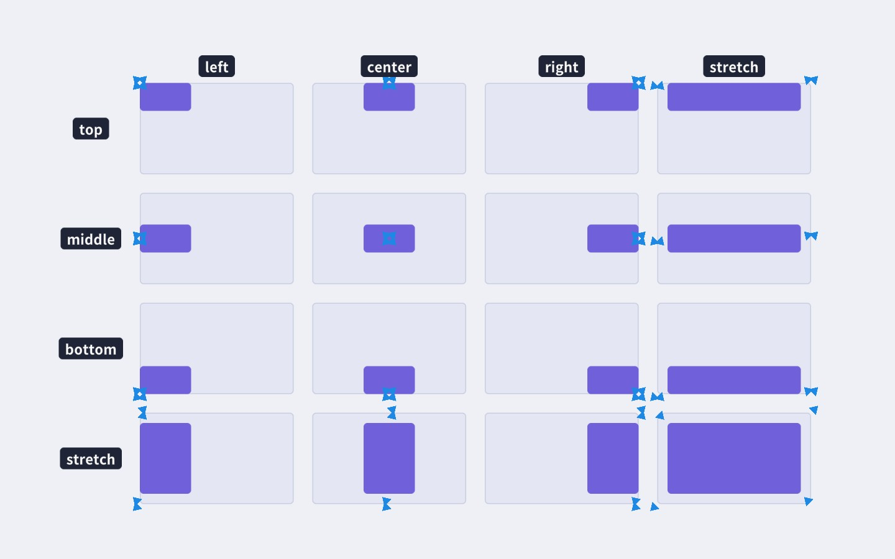
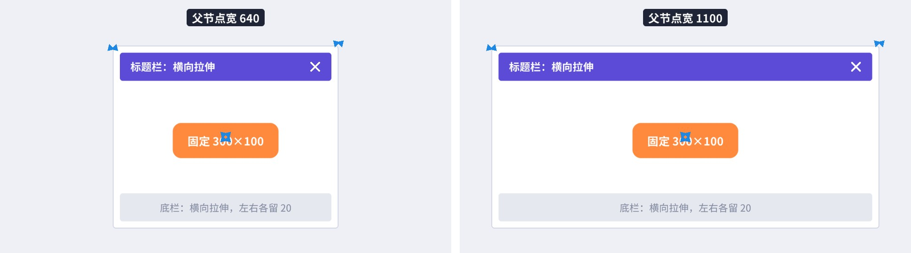
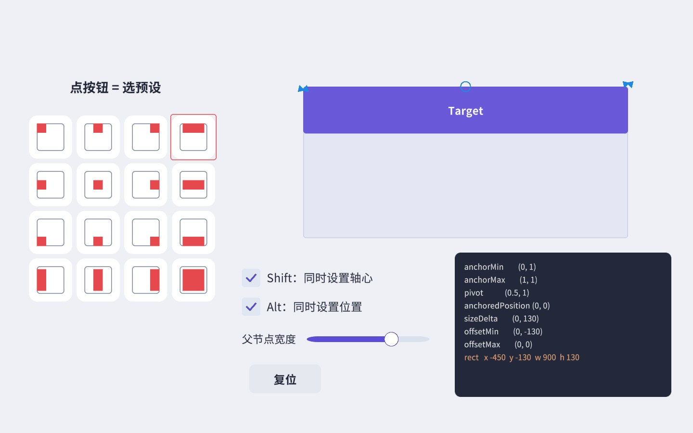
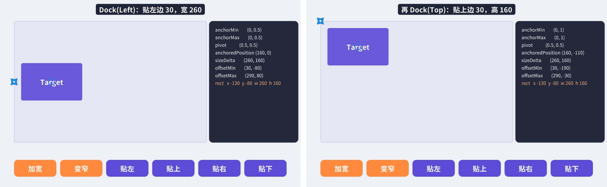
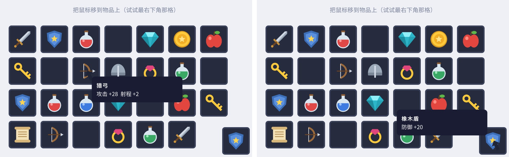
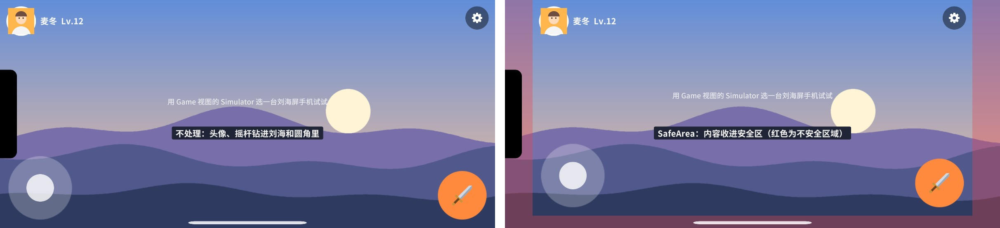
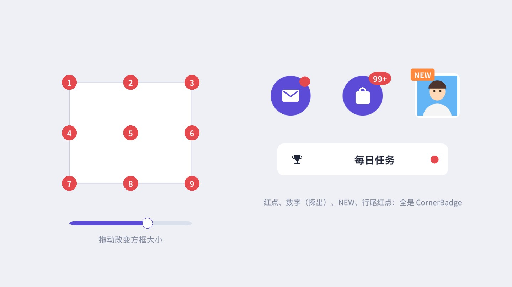
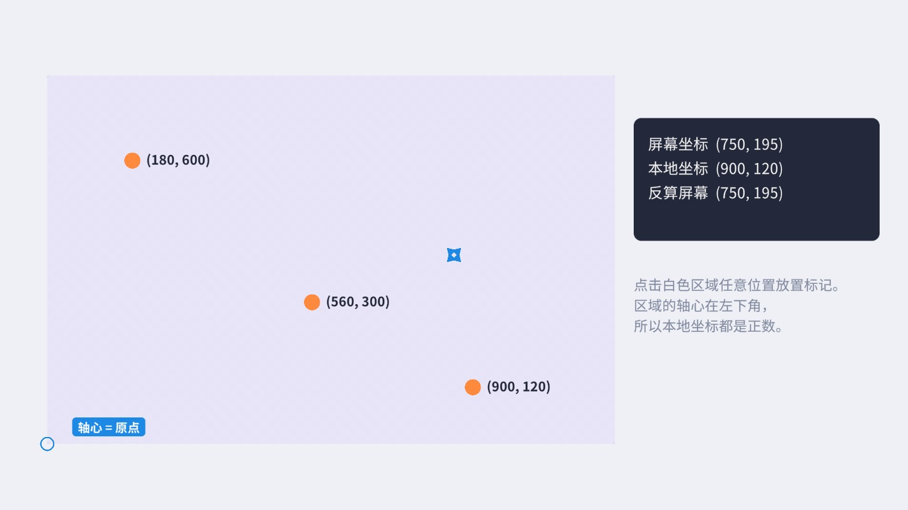

UI 能不能在各种屏幕上摆得对，九成取决于 RectTransform 用得对不对。这一章把锚点、轴心、anchoredPosition、sizeDelta、offsetMin/offsetMax 之间的关系用图和公式彻底讲清楚，再用六个案例练手：代码版锚点预设、App 布局、不出屏幕的 Tooltip、刘海屏安全区、九宫格角标和坐标转换。
普通的 Transform 只描述一个“点”：位置、旋转、缩放。UI 元素需要的是一个“矩形”：它在哪、多宽多高，而且父矩形变大变小时它应该怎么跟着变。RectTransform 继承自 Transform，在此基础上增加了矩形和锚点的概念。它的属性看起来很多，但其实只有五组是“真正存储”的数据，其余都是从它们算出来的：
由它们推导出来的属性有：
x、y 是左下角坐标，width、height 是真实尺寸。想知道一个元素实际多大，读 rect.size，不要读 sizeDelta。
以下公式按 x、y 两个轴分别成立（以 x 轴为例），P 是父矩形，amin、amax 是锚点，p 是轴心。先求锚点矩形在父矩形里的位置：
元素的真实宽度，等于锚点矩形的宽度加上 sizeDelta：
offset 与 anchoredPosition、sizeDelta 之间是这样一组关系（它们和 Unity 的 offsetMin/offsetMax 属性的 getter、setter 完全对应）：
看起来公式不少，归结起来就是一句话：锚点决定“参照物”在哪，offset 决定四条边离参照物多远，轴心决定 anchoredPosition 和旋转缩放以哪一点为准。
用实拍验证一下。图 3-2 左边锚点重合在父矩形中心，右边锚点分开成一个矩形，右侧深色面板是配套的 RectProbe 组件实时读出的数值：

左图：锚点和轴心都是 (0.5, 0.5)，anchoredPosition = (70, 60)，sizeDelta = (300, 180)。锚点矩形大小为 0，所以宽高就是 300×180。代入公式：offsetMin = (70, 60) − (300, 180) × 0.5 = (−80, −30)，offsetMax = (70, 60) + (150, 90) = (220, 150)，rect.x = −0.5 × 300 = −150。和面板上的读数一致。
右图：父矩形 640×560，锚点从 (0.15, 0.2) 到 (0.8, 0.8)，锚点矩形宽 0.65 × 640 = 416、高 0.6 × 560 = 336。我们设的是 offsetMin = (60, 50)、offsetMax = (−50, −45)，也就是左边往里缩 60、下边往里缩 50、右边往里缩 50、上边往里缩 45。于是 sizeDelta = (−50 − 60, −45 − 50) = (−110, −95)，真实尺寸 = (416 − 110, 336 − 95) = (306, 241)，anchoredPosition = offsetMin + sizeDelta × pivot = (60 − 55, 50 − 47.5) = (5, 2.5)。注意这里的 sizeDelta 是负数，它根本不是尺寸——这是新手最常掉进的坑：对一个拉伸的元素写 rt.sizeDelta = new Vector2(300, 100)，结果它变得比父节点还大。
RectProbe 加了 [ExecuteAlways]，在编辑器里用 Rect Tool 拖动 Target、拖动锚点三角、在 Inspector 里改数值，右边的数字会实时变化。花十分钟随手拖一拖，比读十遍公式更有用。RectTransform 是 Transform 的子类，Transform 的属性它全都有：position、localPosition、rotation、localScale、SetParent……于是同一个元素的位置有两种说法：localPosition 是轴心相对父节点轴心的位置，anchoredPosition 是轴心相对锚点参考点的位置。只有当锚点参考点恰好在父节点轴心处（比如锚点和父轴心都在中心）时，两者的 x、y 才相等。
做布局时请始终用 anchoredPosition：它和锚点配合，父节点尺寸变化时语义不变（“离右上角 20”永远是离右上角 20）。localPosition 适合做与布局无关的事，比如把一个点换算出来的本地坐标直接赋给它（案例 3.6），或者做抖动、飘动这种临时偏移。还有两个细节：一是 localPosition.z 和 anchoredPosition3D.z 一般应保持为 0，Overlay 画布里 z 值不同不会改变绘制顺序，但在 Camera/World 画布里可能导致元素和 3D 物体的遮挡关系变得奇怪；二是用代码改父子关系时要用 SetParent(parent, false)，第二个参数 false 表示保留本地数值（锚点、偏移不变），传 true 会为了保持世界位置而改写这些值，UI 元素常常因此尺寸大变。
轴心有两个作用。第一，旋转和缩放绕它进行：图 3-3 里三个矩形的锚点、anchoredPosition（0, 0）、尺寸、旋转角度（30°）都一样，只有轴心不同，结果完全不同。做“按钮按下时缩小”的动效，轴心在中心才是向中间缩；做“血条从左往右减少”的缩放，轴心要放在左边。

第二，anchoredPosition 描述的是轴心的位置。轴心为 (0, 0) 时，anchoredPosition = (0, 0) 意味着元素的左下角落在锚点上；轴心为 (1, 1) 时，意味着右上角落在锚点上。这就是为什么“靠右上角对齐”的元素通常把锚点和轴心都设成 (1, 1)：此时 anchoredPosition = (−20, −20) 就表示“离右上角各 20 个单位”，数值直观、和元素尺寸无关。
rt.pivot = ... 只改轴心本身，anchoredPosition 不变，于是元素会“跳”到别的位置。想在代码里换轴心又不让元素移动，要先算好新的 anchoredPosition，或者像案例 3.1 那样先记下四条边、再用 offset 钉回去。RectTransform 的 Inspector 会根据锚点的情况换着显示字段，这常常让人困惑：
Right 和 Top 在 Inspector 里显示为正数表示向内缩进，而代码里的 offsetMax 是坐标差，向内缩进是负数——图 3-2 右边的 offsetMax = (−50, −45)，Inspector 里显示的是 Right 50、Top 45。从 Inspector 抄数字到代码时，Right 和 Top 记得取反。
RectTransform Inspector 左上角那个方块图标就是锚点预设（Anchor Presets）面板。点开后是一个 4×4 的网格：横向是 left / center / right / stretch，纵向是 top / middle / bottom / stretch，一共 16 种组合。前 3×3 = 9 种是“点锚点”（锚点重合在某个角、某条边的中点或中心），最右一列和最下一行是“拉伸锚点”，右下角是四向拉伸。
图 3-6 把 16 种预设各用一次（同时按 Shift 和 Alt 的效果）：每个浅色框是父节点，紫色块是子元素，蓝色三角是锚点的位置。

使用预设时有几点要理解：
RectTransform Inspector 右上角还有两个小按钮。一个是 R（Raw Edit Mode，原始编辑模式）：默认情况下，你在 Inspector 里修改 Anchors 或 Pivot 时，Unity 会自动调整位置让元素在屏幕上保持不动；打开 Raw Edit 后不再自动调整，你改的就是原始数值，元素会随之跳动。想精确地“只改这一个数”时用它。另一个是 Blueprint Mode（蓝图模式，虚线框图标）：打开后，Scene 视图里的 Rect Tool 会忽略元素的旋转和缩放，按未旋转、未缩放的矩形来显示和拖动。编辑旋转过的元素尺寸时，打开它会方便很多。
锚点在某个方向上是否重合，决定了元素在这个方向上的尺寸行为：

两个方向是独立的：标题栏横向拉伸、纵向锚在顶部（高度固定 80），这是最常见的“上边拉伸”。在实际界面中，几乎所有元素都可以归入这几类：全屏背景（双向拉伸）、顶栏/底栏（单向拉伸）、按钮/图标（固定尺寸，锚在某个角或边）、内容区（双向拉伸，四边留出顶栏和底栏的空间）。
锚点可以是 0～1 之间的任意值，这让“按比例布局”变得非常简单。比如左右分栏界面，左栏锚点 x 从 0 到 0.3、右栏从 0.3 到 1，offset 都为 0，无论屏幕多宽，左栏永远占 30%；再给两栏相邻的那条边各留 10 个单位的 offset，就有了一条 20 宽的缝。再比如一个血条的填充部分，锚点 min 为 (0, 0)、max 为 (hp, 1)，只改 anchorMax.x 就能表示血量百分比，比改宽度更省心，因为不用知道血条总宽是多少（第 2 章 HUD 里的血条就是这样做的）。需要注意的是，锚点比例布局下元素的宽度会随屏幕变化，里面的内容（文字、图标）要能适应不同宽度，否则在窄屏上会挤在一起。
目标：写一个扩展方法 rt.SetAnchorPreset(h, v, setPivot, setPosition)，效果和编辑器里点预设一样：默认保持元素不动，setPivot 相当于按 Shift，setPosition 相当于按 Alt。用代码动态生成 UI 时它非常有用，也是检验你是否真正理解了 3.1 节公式的最好练习。

思路：“保持元素不动”的意思是元素四条边在父节点坐标系里的位置不变。所以分三步：先根据当前的锚点和 offset 算出四条边在父节点里的位置；然后换上新的锚点（和轴心）；最后用“边的位置 − 新锚点的位置”反推出新的 offset。需要贴边（Alt）时，在第三步之前把边的位置改成贴边的位置即可。
逐段看：
pr.min + anchor × pr.size，再加上 offset 就是边的位置。注意这里用的是父节点的 rect，它以父节点轴心为原点，而子元素的 offset 也是在父节点本地坐标里算的，两者在同一个坐标系，可以直接加减。offsetMin 的 setter 内部会按当前轴心把偏移分配到 anchoredPosition 和 sizeDelta 上。场景里的控制脚本把 16 个按钮按“行 = 纵向、列 = 横向”的顺序连到这个函数上，再加一个滑块调父节点宽度，方便观察拉伸效果：
试着这样玩：关掉 Shift 和 Alt，点任意预设，Target 不动，但右下角面板里的数字变了；这时拖动“父节点宽度”滑块，Target 会按新的锚点规则移动或拉伸。再打开 Alt 点 stretch-stretch，Target 铺满父节点。
rect 已经是正确的：如果父节点的尺寸由 Layout Group 或 Content Size Fitter 控制、而本帧布局还没算，读到的就是旧值（3.4 节）。写界面逻辑时经常要在代码里改元素的大小和位置。直接写 anchoredPosition、sizeDelta、offsetMin/offsetMax 当然可以，但要时刻记着锚点是什么情况。RectTransform 提供了两个更“语义化”的方法，以及一个强制刷新的方法。
rt.SetSizeWithCurrentAnchors(RectTransform.Axis.Horizontal, 300) 的意思是“不管锚点是什么，让这个元素的实际宽度变成 300”。它保持锚点不变，按公式 sizeDelta = 目标尺寸 − 锚点矩形尺寸 反推 sizeDelta。对锚点重合的元素，它等价于直接设 sizeDelta；对拉伸的元素，它会算出那个负数的 sizeDelta。元素以轴心为中心变大变小（anchoredPosition 不变）。当你想设置“尺寸”而又不确定锚点情况时，用它而不是 sizeDelta。
rt.SetInsetAndSizeFromParentEdge(RectTransform.Edge.Left, 30, 260) 的意思是“贴着父节点的左边，离左边 30，宽 260”。它会改写锚点：贴左边时把该方向的 anchorMin、anchorMax 都设为 0，贴右边则都设为 1；然后设置 sizeDelta 和 anchoredPosition。它只影响一个方向，另一个方向保持原样。

看右侧读数：Dock(Left) 后 anchorMin.x = anchorMax.x = 0，anchoredPosition.x = 160。为什么是 160 而不是 30？因为轴心在中心（0.5），anchoredPosition 描述的是轴心的位置：30（边距）+ 260 × 0.5（半个宽度）= 160。Dock(Top) 后 anchoredPosition.y = −110 = −(30 + 160 × 0.5)，负号是因为从上边往下算。轴心保持不变，这是这两个方法共同的特点。
这两个方法的实现在引擎的 C# 绑定层（UnityEngine.CoreModule），不在 ugui 包里，行为以上面的实测为准。
改了 RectTransform 之后立刻读 rect，大多数时候能拿到新值。但有两类情况会读到旧值：
LayoutRebuilder.ForceRebuildLayoutImmediate(rt) 或 Canvas.ForceUpdateCanvases()，或者等一帧再读。rt.ForceUpdateRectTransforms() 用来强制 RectTransform 立即重新计算内部数据。它只管 RectTransform 本身，不会触发布局组件的计算。实际中遇到“数据不对”时，更常见的原因是第一种，先排查布局系统。| 想做的事 | 写法 | 说明 |
|---|---|---|
| 设置宽度（任何锚点） | rt.SetSizeWithCurrentAnchors(Axis.Horizontal, w) | 以轴心为中心变化 |
| 读真实尺寸 | rt.rect.size | 受布局控制时注意时机 |
| 铺满父节点、四边留白 | anchorMin = (0,0); anchorMax = (1,1); offsetMin = (l, b); offsetMax = (−r, −t) | Right、Top 取负 |
| 放在右上角、边距 20 | anchorMin = anchorMax = pivot = (1,1); anchoredPosition = (−20, −20) | 锚点与轴心相同，位置直观 |
| 贴左边、宽 260 | rt.SetInsetAndSizeFromParentEdge(Edge.Left, 0, 260) | 会改写横向锚点 |
| 挂到新父节点 | rt.SetParent(parent, false) | 保留锚点和偏移 |
| 四个角的世界坐标 | rt.GetWorldCorners(corners) | 顺序：左下、左上、右上、右下 |
配套工程的 UIKit.Place() 和 UIKit.Stretch() 就是把表里第三、第四行封装成了一个调用，读完这一章再去看 _Core/Runtime/UIKit.cs 里的这两个方法，应该一眼就能看懂。
SetSizeWithCurrentAnchors；贴边用 SetInsetAndSizeFromParentEdge；读尺寸用 rect.size；依赖布局结果的计算放到布局完成之后。sizeDelta = (w, h)；用 sizeDelta 当尺寸读；在 Awake 里读受 Layout Group 控制的元素的 rect；用 localScale 改按钮大小。目标：做一个竖屏 App 风格的界面：顶栏固定 180 高、底部页签栏固定 170 高、中间内容区自动填满剩下的空间；右下角一个悬浮按钮始终贴着内容区的右下角。在 9:16、9:19.5 和 3:4 三种屏幕上都要正确。
思路：竖屏应用用 1080×1920 作参考分辨率、Match = 0（按宽），这样宽度永远是 1080 个单位，屏幕越长内容区越高（第 2 章 2.4 节）。三大块分别用三种锚点：
| 元素 | 锚点（Min → Max） | 轴心 | 其他 |
|---|---|---|---|
| TopBar | (0, 1) → (1, 1)：上边横向拉伸 | (0.5, 1) | Left/Right = 0，Pos Y = 0，Height = 180 |
| TabBar | (0, 0) → (1, 0)：下边横向拉伸 | (0.5, 0) | Left/Right = 0，Pos Y = 0，Height = 170 |
| Content | (0, 0) → (1, 1)：四向拉伸 | (0.5, 0.5) | Left/Right = 0，Top = 180，Bottom = 170 |
| 任务卡片 | (0, 1) → (1, 1)：上边横向拉伸 | (0.5, 1) | Left/Right = 40，Pos Y = −40 − 230 × i，Height = 200 |
| 悬浮按钮 | (1, 0)：内容区右下角 | (1, 0) | Pos = (−50, 50)，150 × 150 |
三张截图里，顶栏、底栏的高度完全相同，内容区高度从 9:16 的 1570、到 9:19.5 的约 1990，再到 3:4 平板的约 1090，能完整显示的任务从平板上的 4 条、9:16 的 6 条到 9:19.5 的全部 7 条不等。平板和 9:16 上内容放不下，最后一张卡片被 RectMask2D 裁掉——实际项目里内容区应该是一个 ScrollRect（第 9 章），这里先只关心尺寸。
常见坑：一是把内容区的 Top/Bottom 写死成顶栏、底栏的高度后，又去改了顶栏高度，两边对不上，中间露出一条缝或者互相覆盖——数值多处重复时，最好在代码或预制体里集中定义；二是卡片用了点锚点（固定宽 1000），在 1080 宽的手机上正好，到平板上两侧空出一大块，正确的做法是横向拉伸、左右留边距；三是悬浮按钮锚在 Canvas 而不是 Content 上，有了底部安全区之后它会盖到页签栏上。
扩展：铃铛上的红点用的是案例 3.5 的 CornerBadge；SafeArea 节点在刘海屏手机上会自动收缩（案例 3.4）。顶栏通常还应该延伸到状态栏后面（背景色铺到最顶上、内容在安全区内），做法是把顶栏背景放在 SafeArea 外面、顶栏内容放在里面。
UI 开发中会遇到好几套坐标，弄混了是坐标类 Bug 的主要来源：
Input.mousePosition、PointerEventData.position、触摸位置都是屏幕坐标。
世界坐标transform.position。对 Overlay 画布上的元素，世界坐标在数值上就等于屏幕像素坐标（Overlay 画布被摆在一个“1 单位 = 1 像素”的空间里）；对 Camera 和 World Space 画布则是真正的 3D 坐标。
本地坐标相对于某个 RectTransform 的轴心的坐标，单位是 UI 单位。localPosition、rect 都在这个坐标系里。
锚点坐标anchoredPosition：相对于锚点参考点的偏移。只有锚点在父节点轴心处时，它才和 localPosition 的 x、y 相同。
为什么 Overlay 画布上元素的世界坐标等于屏幕像素坐标？Overlay 画布不经过相机，Unity 把画布的 RectTransform 摆在世界空间里：左下角在原点、大小等于屏幕像素、缩放等于 scaleFactor。于是画布里任何一点经过一层层父节点变换后得到的世界坐标，数值上就是它在屏幕上的像素位置。这也解释了第 1 章里 Overlay 画布在 Scene 视图中为什么大得离谱。利用这个性质，Overlay 下 rt.position = Input.mousePosition 就能让元素跟随鼠标；但这个写法一换成 Camera 模式就失效，所以更推荐用下面的转换方法，它在三种模式下都成立。
屏幕与 UI 之间的换算都交给 RectTransformUtility，最常用的是两个方法：
ScreenPointToLocalPointInRectangle(rect, screenPoint, cam, out localPoint)：把屏幕点换算成 rect 这个 RectTransform 的本地坐标（以它的轴心为原点）。内部是从相机发一条穿过该屏幕点的射线，与 rect 所在的平面求交，所以对 Camera 和 World Space 画布（包括旋转过的）也成立。返回值为 false 表示射线和平面不相交。WorldToScreenPoint(cam, worldPoint)：把世界坐标换算成屏幕坐标。常用来求某个 UI 元素在屏幕上的位置。另外 RectangleContainsScreenPoint(rect, screenPoint, cam) 判断屏幕点是否落在矩形内（Graphic Raycaster 就用它），ScreenPointToWorldPointInRectangle 把屏幕点换算到矩形所在平面上的世界坐标。
这几个方法都要传一个相机，传错相机是坐标转换最常见的 Bug：Overlay 画布必须传 null（传 Camera.main 反而会算错）；Camera 模式传画布的 Render Camera；World Space 传能看到它的那台相机。在事件回调里，最省心的是直接用 eventData.pressEventCamera 或 eventData.enterEventCamera，EventSystem 已经帮你找好了正确的相机（Overlay 时就是 null）。
目标：鼠标移到背包格子上时，在鼠标右下方显示物品说明；靠近屏幕右边或下边时，提示框自动翻到鼠标的左边或上边，无论如何都不超出屏幕。

思路：每帧把鼠标的屏幕坐标转成画布的本地坐标；默认把提示框的左上角（轴心 (0, 1)）放在鼠标右下方一点；如果右边放不下，把轴心改成右上角 (1, 1)、放到鼠标左边；下边放不下同理改成左下角；最后再把位置夹（Clamp）在画布范围内兜底。改轴心而不是手算偏移，是因为轴心天然表达了“框的哪个角挨着鼠标”，代码会简单很多。
几个关键点：
rect：它同样以画布中心为原点，xMax 就是右边缘。这里的单位都是 UI 单位，和屏幕分辨率、scaleFactor 都无关，所以不需要任何缩放换算。xMin + size.x × pivot.x 到 xMax − size.x × (1 − pivot.x)。还有一个容易忽略的点：MoveTo 在 Update 里每帧调用，而提示框的尺寸只在 Show 时计算一次，所以跟随鼠标的过程中不会有任何布局重算，只是改了 pivot 和 anchoredPosition。改这两个属性会让画布重新合批，但不会触发文字重新生成网格，开销很小。如果你把提示框放在一个单独的子画布里，它的移动就完全不会影响背包里其他元素的合批（第 2 章的“动静分离”）。
显示和隐藏由挂在每个格子上的触发器负责：
注意 OnDisable 里也收起了提示框：如果鼠标停在格子上时格子被关闭（比如切换背包页签），它不会再收到 PointerExit，提示框就会一直挂在屏幕上。提示框高度在 Show 里用 TMP_Text.GetPreferredValues 按固定宽度算出，这样不需要依赖 Content Size Fitter，也避免了“本帧布局还没算、尺寸是旧值”的问题（3.4 节）。
扩展：触屏设备没有“悬停”，通常改为长按显示、松手隐藏，第 6 章的长按按钮可以直接拿来用。提示框出现时加一点延迟（比如 0.3 秒）和淡入，体验会好很多（第 15 章）。
目标：写一个 SafeArea 组件，挂在画布下一个铺满全屏的节点上，自动让它收缩到屏幕的安全区域内，所有重要 UI 放在这个节点下就能避开刘海、挖孔、圆角和底部横条。

思路：Unity 用 Screen.safeArea 告诉我们安全区的位置，它是一个以像素为单位、原点在屏幕左下角的 Rect。把它除以屏幕宽高，就得到 0～1 的比例——这正好是锚点需要的形式。把节点的 anchorMin、anchorMax 设成这两个比例，offset 设为 0，节点就恰好覆盖安全区。整个组件的核心就是“安全区比例 = 锚点”这一个想法。
Screen.safeArea 在某些安卓设备上要等第一帧之后才准确，这也是组件在 Update 里持续检查的原因之一。目标：做一个通用的角标组件，把红点、数字、“NEW”标签钉在父节点的九个位置之一（四个角、四条边的中点、中心），可以调节往里收还是往外探出；父节点尺寸变化时自动跟随。

思路：九个位置正好对应九种点锚点。锚点设在目标位置、轴心设在角标中心，那么 anchoredPosition = (0, 0) 时角标的中心就压在这个位置上。再沿“指向父节点中心”的方向偏移 inset，就能让角标往里收（正数）或往外探出（负数）。
为什么轴心固定在角标中心，而不像其他元素那样“锚点和轴心相同”？因为角标的设计意图通常就是“压在角上”：红点的圆心落在按钮右上角附近，一半在里一半在外，这正是轴心在中心、anchoredPosition 接近 0 时的效果。如果轴心也设成 (1, 1)，inset 为 0 时角标会完全缩在按钮里面，想探出去还得根据角标自身尺寸算偏移。不同的设计稿要求不同，理解了轴心的含义，按需要调整即可。
“指向中心的方向”用 (0.5 − a) × 2 求得：右上角 a = (1, 1)，方向是 (−1, −1)；左边中点 a = (0, 0.5)，方向是 (1, 0)；中心 a = (0.5, 0.5)，方向为 0，inset 不起作用。一个式子处理了九种情况，没有 switch 分支。
组件用了 [ExecuteAlways] 和 OnValidate，在 Inspector 里改 corner 或 inset 时立刻生效，不用运行。由于定位完全靠锚点，父节点尺寸改变时不需要任何代码，角标自然跟着角走——这就是图 3-14 左边拖动滑块时发生的事。
常见坑：一是角标作为按钮的子物体时会画在按钮之上（正确），但如果按钮外面套了 Mask 或 RectMask2D，探出去的部分会被裁掉；二是角标开着 Raycast Target 会挡住按钮的一角，导致点角标所在位置时点不到按钮——角标通常只是装饰，关掉它的 Raycast Target；三是数字角标的宽度应随数字位数变化（“9”和“99+”），可以配合第 10 章的 Content Size Fitter 实现。
目标：点击区域内任意位置，在点击处放一个标记，标记旁边显示它的本地坐标；右侧面板显示屏幕坐标、本地坐标，以及从标记反算回去的屏幕坐标。

这段代码演示了一对互逆的转换：
ScreenPointToLocalPointInRectangle(area, screenPos, cam, out local)。得到的 local 以 area 的轴心为原点。本例轴心在左下角，所以点在区域内时坐标都是正数；如果轴心在中心，左下角就是 (−600, −390)。m.localPosition = local 放置。localPosition 同样以父节点轴心为原点，和 local 完全对应。如果改用 anchoredPosition，就要先确认标记的锚点在哪：标记模板的锚点是默认的 (0.5, 0.5)，即 area 的中心，与 area 的轴心（左下角）不重合，直接赋值会偏移半个区域。WorldToScreenPoint(cam, m.position)，反算出的屏幕坐标与点击位置一致（图中两行数字相同），说明转换是可逆的。相机参数来自 eventData.pressEventCamera。配套场景用的是 Overlay 画布，它的值是 null，你可以把画布改成 Camera 模式、指定相机，代码不用改就能正常工作；如果把相机参数写死成 Camera.main，在 Overlay 下就会算错。
同样的代码也适用于 World Space 画布，只是有两点要注意。第一，ScreenPointToLocalPointInRectangle 求的是射线与画布平面的交点，画布被斜着看时，点击位置会被正确地“投影”到画布上；但如果画布几乎侧对相机，射线与平面接近平行，交点会飞得很远，甚至返回 false，所以代码里一定要检查返回值。第二，World Space 下屏幕上的一个像素对应画布上多少个单位，取决于画布离相机多远、倾斜多少，不再是固定的 scaleFactor，因此拖拽等操作要每帧重新换算位置，而不能用“屏幕位移 ÷ scaleFactor”累加。
AnchorPresets 加一个只改轴心、但保持元素在屏幕上不动的方法 SetPivotKeepPosition(Vector2 pivot)。